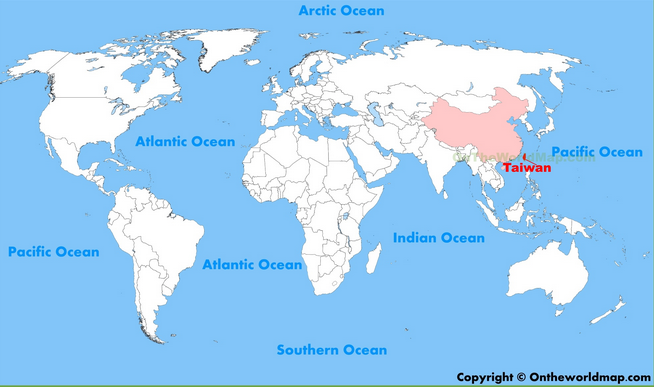

Historique
Premier gouvernement officiel de l'île dans son ensemble: la Chine impériale de 1683 à 1895.
Puis vient le Japon jusqu'à leur défaite lors de la seconde guerre mondiale.
La chine récupère Taiwan en 1945 (parti au pouvoir: Le Kuomintang -KMT- mené par Tchang Kaï-chek).
Le parti communiste chinois (leader: Mao Zedong), suite à la guerre civile, récupère le pouvoir en Chine (Taïwan inclu) qu'il nomme "République Populaire de Chine".
Tchang Kaï-chek et son parti (le KMT) fuit vers l'île de Taïwan en 1949. Taïwan est alors une dictature dirigée par Tchang Kaï-chek avec pour objectif de récupérer le pouvoir sur la Chine continentale. Tchang Kaï-chek meurt au pouvoir en 1975 sans avoir réussi à mener à bien ce projet mais en ayant tout de même réussi à conserver l'existence de son parti sur l'île de Taïwan.
Le vice président Yen Chia-kan occupe le poste de président par intérim jusqu'à la fin du mandat qu'aurait dû achever Tchang Kaï-chek.
Chiang Ching-kuo, fils de Tchang Kaï-chek, reprend le pouvoir en 1978, toujours membre du KMT, et le garde jusqu'à sa mort en 1988. Chiang Ching-kuo assouplit le régime très autoritaire établi par son père afin de ne pas compromettre le développement du pays et de ne pas nuire aux relations avec les US nécessaires à la protection de Taïwan face au parti communiste chinois qui souhaite retrouver la souveraineté de l'île. Chiang Ching-kuo met notamment fin à la loi martiale en 1987. Taïwan est alors relativement isolé sur le plan international. Taïwan ne fait plus parti ni des Nations Unies, ni de nombreuses organisations internationales. Ceci en partie à cause du parti communiste chinois qui fait pression, mais également à cause de Tchang Kaï-chek lui-même, qui refuse que "deux" Chines ne soient reconnues, et force donc les organisations à n'accepter que le KMT ou le parti communiste chinois en leur sein, mais pas les deux. Tchang Kaï-chek va jusqu'à retirer Taïwan des organisations reconnaissant le parti communiste chinois.
Lee Teng-hui succède à Chiang en 1988 et continue sur la même vision politique de libéralisation du régime. En 1996, Lee Teng-hui organise la première élection présidentielle au suffrage universel direct, qu'il gagne. Défenseur de l'indépendance de Taïwan, il se met à dos le parti communiste chinois et les USA (qui craignent un conflit dans cette partie stratégique de l'Asie du sud).
En 2000, pour la première fois, un parti autre que le KMT, le DPP, arrive au pouvoir sous la présidence de Chen Shui-bian. Chen travaille à la consolidation de l'identité taïwanaise.
En 2008, Ma Ying-jeou (KMT) est élu à la présidence de la République. Il désamorce la volonté indépendentiste et tente un rapprochement entre Taïwan et la Chine continentale. Il fait face au mouvement des tournesols, activistes pro-indépendance en 2014.
En 2016, Tsai Ing-wen (DPP), première femme au pouvoir, reprend le pouvoir avec une vision indépendentiste pour le futur de l'île. Elle soutient les groupes défavorisés, notamment les aborigènes taïwanais et les groupes LGBT. Le mariage homosexuel sera légalisé à Taïwan en 2017.
Les poids dans la politique étrangère de Taïwan
La politique étrangère de Taïwan peut être analysée à différent niveau (niveau systémique, niveau national, l'influence de la société et les influences individuels des présidents). En fonction de la perspective d'étude, on arrivera à des conclusions différentes, ici, j'ai essayé de lister les acteurs ayant un rôle direct ou indirect dans la politique internationale de Taïwan.
Les présidents , selon qu'ils soient davantage pragmatiques (cad qu'ils acceptent de faire des concessions pour gagner du terrain sur d'autres domaines) ou sans compromis (eg., Tchang Kaï-chek qui se retire des organisations si le parti communiste chinois est également reconnu) vont influencer différemment la politique étrangère de Taïwan.
Certains membres ou organisations étatiques jouent un rôle direct et/ou indirect dans la politique de Taïwan. Ces instances incluent Le premier ministre (conseiller du président), le ministère des affaires étrangères (met en route les stratégies lancées par le président + conseille le président), le conseil de sécurité national (bureau de conseil pour le président), le ministère de la défense nationale (gérance des actions militaires), le Yuan législatif (approuve une guerre ou non, attribution d'un budget en regard au traité de paix ou déclaration de guerre, etc...), le bureau de sécurité nationale (agence de services secrets), le conseil des affaires continentales (gère les rapports avec la Chine continentale)
Les USA et la Chine . Si Taïwan se déclare indépendant, la Chine attaque. Les USA ont donc intérêt à conserver un Taïwan allié mais discret afin de ne pas risquer un conflit dans cette zone et conserver ses relations avec la Chine. Ainsi Taïwan doit la jouer subtilement. Chaque chamboulement dans les relations USA-Chine est tour à tour atout ou contrainte pour l'indépendance de l'île. Par exemple, la guerre froide ou la guerre contre le terrorisme débutant en 2001 après l'attaques du World Trade Center rapproche les USA de la Chine continentale et donc éloigne Washington de Taïwan. Au contraire, la chute du mur de Berlin ou l'élection de Trump qui déclare la Chine comme ennemie commerciale rapproche les USA de Taïwan.
L'opposition au parti politique au pouvoir , (incluant par exemple le KMT bien sûr, mais aussi le TSU, le PFP, etc...) joue un rôle dans la diplomatie taïwannaise. Ce rôle peut être un sabbotage de la politique étrangère du parti au pouvoir mais parfois aussi un travail d'équipe utile au future de l'île.
Les organisations non-gouvernementales et gouvernementales . Taïwan se bat pour obtenir une place au sein d'organisations mondiales de type OMS ou Nations Unies. Avoir ou non un siège au sein de ce type d'organisation est un poids majeur dans la reconnaissance internationale d'une nation.
L'opinion publique . Les sondages, les actions des citoyens (le mouvement des tournesols par exemple), etc... jouent un rôle important dans l'orientation de Taïwan depuis que la démocratie a été mise en place sur l'île.
Les thinktanks incluants notamment l'Institut des Relations Internationales, l'institution Chung Hua pour la recherche économique, etc...
Sans oublier Les lobbies concernant les secteurs où l'indépendance serait une menace ou un atout, les médias , les autres pays du monde qui, en reconnaissant ou non Taïwan comme pays à part entière, en s'engageant dans des relations commerciales ou diplomatiques avec l'île, font office de tremplin ou de frein pour l'indépendance de l'île, et bien sûr, les investisseurs en Chine continentale .
Sources :
Foreign Policy Making in Taiwan: From Principle to Pragmatism, Hickey, Dennis V. 2007